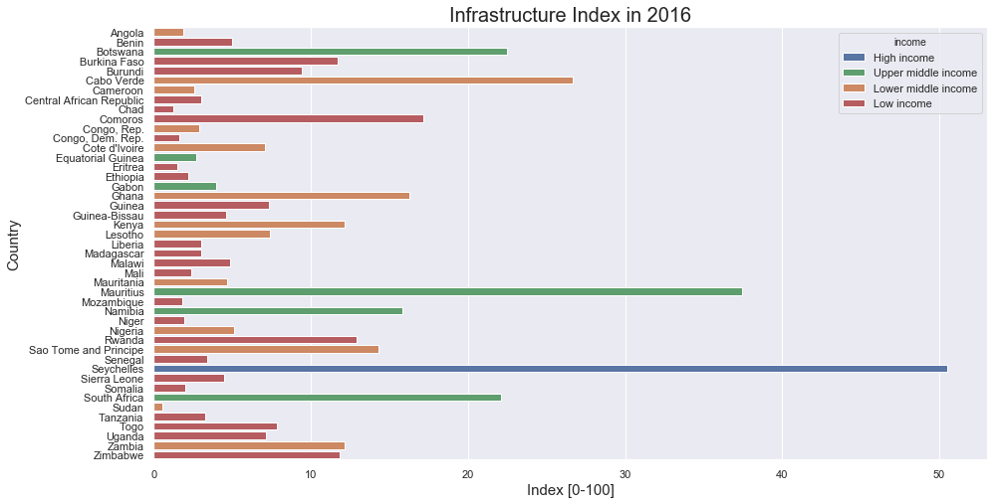
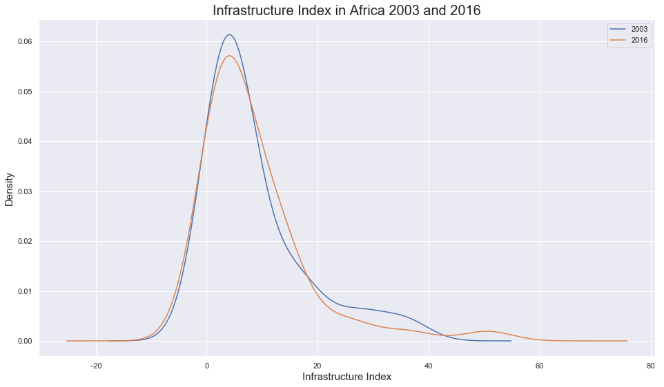

Infrastructure development is a key driver for progress across the African continent and a critical enabler for productivity and sustainable economic growth. This was in recognition of the fact that Africa’s weak physical infrastructure base was impeding the region’s progress toward improved living standards, poverty reduction, domestic and international trade and investment, and socially inclusive GDP growth.
Across the African continent, high income and upper middle income countries placed high infrastructure index (approximately 20-40) in 2016 whereas most lower middle income and low income countries did not even reach 10 of infrastructure index. A key driver of these countries to have improved infrastructure was to attract tourist from Europe and North America.
Source: African Development Bank Group
Created with: Python, seaborn

The overall infrastructure index in Africa shows an improved, smoother distribution from 2003 to 2016 due to an increase in high infrastructure index.
Source: African Development Bank Group
Created with: Python, matplotlib